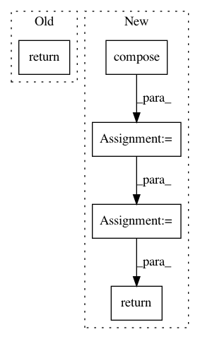

03548f7a2ab0237184f2bf63ae0e18ef124b8633,geomstats/geometry/special_euclidean.py,SpecialEuclidean,regularize_tangent_vec,#SpecialEuclidean#Any#Any#Any#Any#,210
Before Change
[rotations_vec, tangent_vec[:, dim_rotations:]], axis=1)
if point_type == "matrix":
return tangent_vec
raise ValueError("Invalid point_type, expected \"vector\" or "
"\"matrix\".")
After Change
[rotations_vec, tangent_vec[:, dim_rotations:]], axis=1)
if point_type == "matrix":
tangent_vec_at_id = self.compose(
self.inverse(base_point), tangent_vec)
regularized = self.regularize_tangent_vec_at_identity(
tangent_vec_at_id, point_type=point_type)
return self.compose(base_point, regularized)
raise ValueError("Invalid point_type, expected \"vector\" or "
"\"matrix\".")
In pattern: SUPERPATTERN
Frequency: 3
Non-data size: 5
Instances
Project Name: geomstats/geomstats
Commit Name: 03548f7a2ab0237184f2bf63ae0e18ef124b8633
Time: 2020-04-10
Author: nicolas.guigui@inria.fr
File Name: geomstats/geometry/special_euclidean.py
Class Name: SpecialEuclidean
Method Name: regularize_tangent_vec
Project Name: geomstats/geomstats
Commit Name: d496aaefc795e176b615815e9f30f335860f013b
Time: 2018-01-22
Author: ninamio78@gmail.com
File Name: geomstats/lie_group.py
Class Name: LieGroup
Method Name: group_log
Project Name: geomstats/geomstats
Commit Name: d496aaefc795e176b615815e9f30f335860f013b
Time: 2018-01-22
Author: ninamio78@gmail.com
File Name: geomstats/lie_group.py
Class Name: LieGroup
Method Name: group_exp